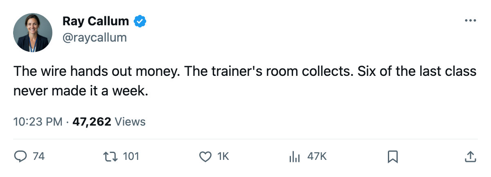
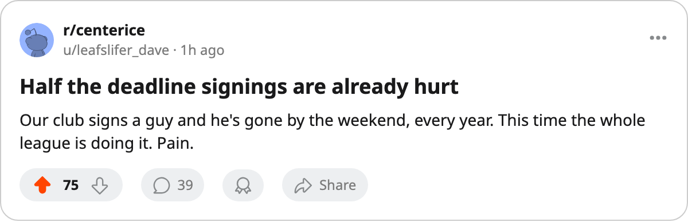

12 Signings Since March 13, and 6 of Them Are Already Out
The league places all six onsets between March 16 and March 19, the same window the previous class went down in.
 Ray CallumSenior correspondent · Home Ice Network
Ray CallumSenior correspondent · Home Ice Network
The league has filed 12 signings since March 13 and no trades. Six of those 12 men are on the injured list today, and the league places all six onsets between March 16 and March 19.
Buffalo lost both of its March 6 signings inside five days. This time six clubs lose a man each, all in one window, and not one of the six reached seven days past his signature.
| player | club | signed | salary | out | return |
|---|---|---|---|---|---|
 Patrick Marleau83 Patrick Marleau83 |  San Jose Sharks San Jose Sharks | 2005-03-13 | $618,880 | foot | 2005-05-01 |
 Oleg Petrov73 Oleg Petrov73 |  Edmonton Oilers Edmonton Oilers | 2005-03-15 | $594,050 | knee | 2005-05-01 |
 Ladislav Nagy81 Ladislav Nagy81 |  Phoenix Coyotes Phoenix Coyotes | 2005-03-13 | $338,550 | rib | 2005-04-23 |
 Dan Hinote77 Dan Hinote77 |  Colorado Avalanche Colorado Avalanche | 2005-03-13 | $421,620 | ankle | 2005-04-15 |
 Josh Holden72 Josh Holden72 |  Columbus Blue Jackets Columbus Blue Jackets | 2005-03-13 | $579,060 | neck | 2005-04-11 |
 Tom Koivisto70 Tom Koivisto70 |  St. Louis Blues St. Louis Blues | 2005-03-13 | $548,050 | leg | 2005-03-22 |
The body part is the league's designation. The cause is not recorded, and the onset is known only as that window.
Phoenix carries the hardest load. Nagy joins  Drake Berehowsky74, out with a knee to April 19, and
Drake Berehowsky74, out with a knee to April 19, and  Ossi Vaananen75, out with an arm to April 16, at a club that holds the West's eighth line at 76 points with 11 games left. Berehowsky signed on March 12 and was on the injured list by March 16. Nagy went down in the window that followed.
Ossi Vaananen75, out with an arm to April 16, at a club that holds the West's eighth line at 76 points with 11 games left. Berehowsky signed on March 12 and was on the injured list by March 16. Nagy went down in the window that followed.
San Jose paid Marleau $618,880 on March 13 and loses him to a foot until May 1, with 63 points and 11 games left. Edmonton paid Petrov $594,050 two days later and loses the knee to the same day, with the Oilers on 96 points. St. Louis gets Koivisto back first, March 22, from a leg.
The rest of the class is still standing. Hinote and Holden will miss more time than the men who signed beside them.
No trade has been confirmed by the league with the calendar's deadline here.

